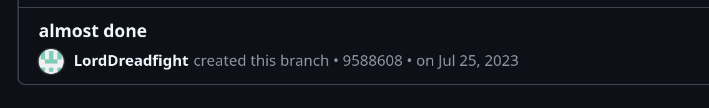

Lange hat's gedauert..... Aber jetzt ist sie fertig. Meine Website, laut Github Main Branch vom 25 Juli 2023 nun seit über einem Jahr in Arbeit.

Nach über einem Jahr intensiver Arbeit ist es endlich soweit:
Die erste Beta-Version meiner Website ist online!
Es war ein spannender Weg voller Höhen und Tiefen, Jquery errors, htaccess errors, unerklärlicher Errors wegen denen ich meine Website zerpflücken und wieder zusammenflicken muss.
Natürlich ist die Website noch nicht perfekt, und es wird sich in den kommenden Wochen und Monaten vor allem im Bereich der Benutzeroberfläche (GUI) einiges verändern.
Das Design und die Nutzerfreundlichkeit sollen kontinuierlich verbessert werden. Es ist mir wichtig, dass die Seite nicht nur funktional,
sondern auch visuell ansprechend ist, und ich freue mich darauf, diese Anpassungen Schritt für Schritt umzusetzen.
Es werden regelmäßig neue Artikel erscheinen, je nachdem wieviel Zeit ich finde.
Egal, ob ihr an tiefgehenden Analysen oder unterhaltsamen Geschichten interessiert seid, ich werde mein Bestes geben, um die Seite lebendig und spannend zu halten.
Geplant sind auf dieser Website Tutorials, how to Guides wie man Sachen repariert, vieeeeeeelleeeiiicht etwas Politik in Form von "Right-to-Repair".
Euer Feedback ist mir dabei unglaublich wichtig, denn nur so kann die Website besser werden.
Also zögert nicht, mir eure Meinungen, Ideen oder Verbesserungsvorschläge mitzuteilen (für Discord siehe unten in der About Sektion).
Gemeinsam können wir diese Plattform weiterentwickeln und zu einem Ort machen, den man gerne besucht.
Grüße,
Beta β